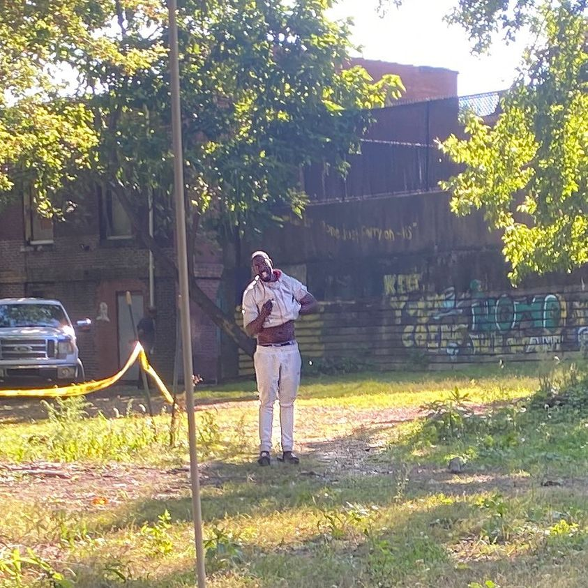

Timeline photos
Eli is back.
I’m not exactly sure where he went. But he keeps coming back to us.
For me, it’s like when a bird keeps returning to your bird feeder. You’re so excited they found you and felt safe enough to come back.
I was really glad to see him.
As I understand it, when Eli stops taking his medication he becomes too much for his family to handle. I never look down on a family for sending their seriously mentally ill family member away. These extremely mentally ill people can be dangerous to pets and other family members.
I know that it often breaks the hearts of the family to put them out. But I believe it’s often the right thing to do.
A homeless woman once called our place “Sage’s Outdoor Psych Ward.”
I loved that idea. Eli and most of these people aren’t hurting anyone. They are just doing their thing. I’m honored by their presence. Plus I just like them. They are really interesting people.
The bad part is: I have next to nothing to offer them. Our house is condemned. I’ll go to jail if I put up a tent for them. So, right now we have one picnic table, a bench (that Crystal the 7-8 month pregnant woman is currently sleeping on) and a few chairs. That’s all I have left. The city has taken everything else.
But still they come.
It’s not surprising when you think about it. Our community accept them for who they are right now. That’s the unspoken law of our community. YOU ARE WELCOME. Maybe you can empathize with how wonderful it feels when someone doesn’t want to change you, or nag you. It feels so nice when someone is just happy to see you and be around you.
Eli is currently a little challenging for our community because he’s enjoying walking around totally naked. We have some pretty conservative community members. So it makes them uncomfortable. But it’s also a good opportunity for all of us to practice acceptance and forgiveness. Eli’s nakedness isn’t hurting anyone.
He shook my hand when I saw him last on Friday. I was so happy to make that connection. I’m heading over there soon. Hopefully he’ll be there and he will come have some Toast and Toppins and some coffee and cigarettes… all thanks to your donations.